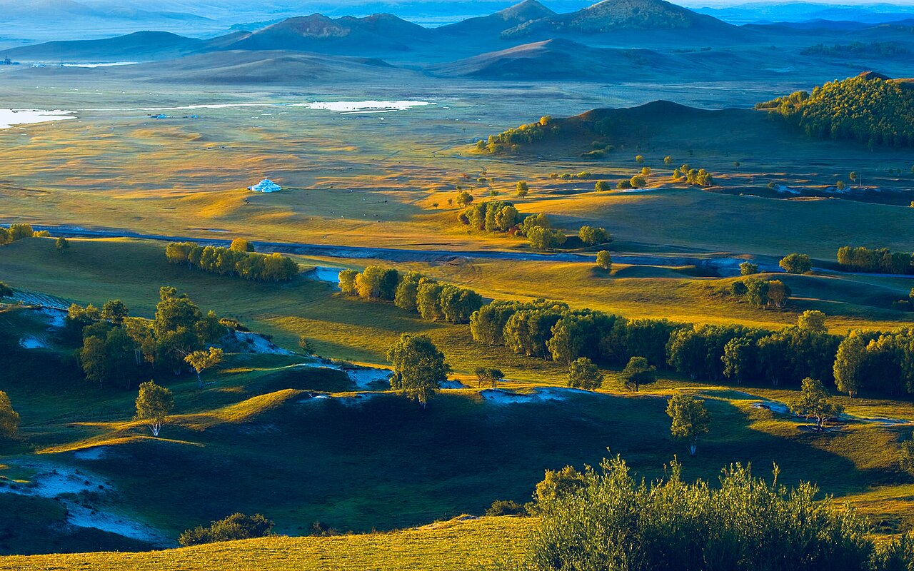

呼伦贝尔大草原是中国保存最完好的草原之一，莫日格勒河九曲、额尔古纳湿地、满洲里国门与中俄蒙交界景观构成经典环线。夏季绿草、冬季雪原，四季皆有自驾价值。
经典环线：海拉尔—莫日格勒河—额尔古纳—根河—莫尔道嘎—室韦/临江—黑山头—满洲里—呼伦湖—海拉尔。中俄边境公路（X904）风景极佳，但部分路段限速与摄像头密集。
6–8 月草最绿，7 月那达慕期间活动丰富。根河是中国冷极，即使夏季也需备外套。尊重俄罗斯族、蒙古族、鄂温克等民族文化，驯鹿部落参观需预约并遵守规定。
Itinerary
分日行程
海拉尔 → 莫日格勒河 → 额尔古纳
出城即见草原，莫日格勒河观景台俯瞰九曲。下午至额尔古纳，可访亚洲第一湿地，木栈道俯瞰根河曲流。
额尔古纳 → 根河 → 莫尔道嘎
经根河可参观鄂温克驯鹿部落（预约）。莫尔道嘎国家森林公园白桦与松针香弥漫，龙岩山看林海日落。
莫尔道嘎 → 室韦 → 临江
沿额尔古纳河中俄边境公路南下，室韦俄罗斯民族乡木刻楞建筑独具风情。临江村更安静，适合看界河日落。
临江 → 黑山头 → 满洲里
黑山头可体验正规草原骑马与日落。傍晚抵满洲里，国门景区、套娃广场、俄式夜景是边境小城名片。
满洲里 → 呼伦湖 → 海拉尔
呼伦湖是中国第五大湖，湖面辽阔。返回海拉尔，可访呼伦贝尔民族博物馆总结行程。
海拉尔休整或延伸阿尔山
若时间允许，可南延阿尔山国家森林公园（另需 2–3 天）。否则飞返或铁路离开，结束呼伦贝尔之旅。
Photo Essay
沿途影像





Highlights
核心景点
莫日格勒河
「天下第一曲水」，草原上的蜿蜒蓝带，航拍或制高点俯瞰效果最佳。免费观景点多个，旺季可能拥堵。
额尔古纳湿地
亚洲最大湿地之一，根河在平原上画出 S 形曲流。日落时分色彩层次丰富，木栈道保护生态。
室韦俄罗斯乡
中俄边境上的俄罗斯族聚居地，木刻楞房屋与列巴、蓝莓酱是特色。界河对岸即俄罗斯。
满洲里国门
中俄边境最大陆路口岸之一，国门景区可了解边境贸易历史。夜景俄式建筑灯光璀璨，像异域小城。
呼伦湖
蒙古语「海拉尔湖」，草原上的「海」。夏季可戏水，冬季可赏冰捕（季节限定）。
Route
途经站点
环线起终点
呼伦贝尔首府，机场与火车站。
湿地之城
亚洲第一湿地在此。
边境小镇
中俄界河额尔古纳河。
口岸城市
国门、套娃广场必访。
环线完成
视阿尔山等支线增减。
Practical
实用信息
- 边境公路勿靠近界河军事敏感区域拍照，服从边防提示。
- 草原骑马选择正规马场，佩戴护具，听从教练指导。
- 夏季蚊虫多，备驱蚊液；紫外线强，全程防晒。
- 部分乡镇加油站间距大，油量低于半箱即补。
- 尊重驯鹿部落与鄂温克文化，勿随意喂食或惊吓驯鹿。
EV Tips
新能源出行提示
驾驶腾势 N7 等纯电 SUV 出发前，请特别注意以下事项：
- 海拉尔、满洲里、额尔古纳有快充，根河、莫尔道嘎补能条件一般，城镇出发前满电。
- 草原风大侧风明显，注意握稳方向盘并预留额外续航。
- 边境地区部分路段信号弱，下载离线地图。